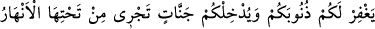
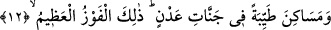

aydınlığına ulaşamamışlardır. Gözle görmeğe dayalı iyânî tevhidin bir kaç derecesi
vardır. Birincisi, fiillerin tevhidi, ikincisi, sıfatların tevhidi ve üçüncüsü, zâtın
tevhididir. Fiillerin kendisine tecellî ettiği kimse Allah’a güvenir ve O’na sığınır.
Sıfatların kendisine teccellî ettiği kimse rızâ ve teslimiyet hâline girer. Zat teccellîsine
ulaşan kimse de zatta mahv ve yoklukla fânî olur.
12. İşte bu takdirde O, sizin günahlarınızı bağışlar, sizi zemininden ırmaklar akan
cennetlere, Adn cennetlerindeki güzel meskenlere koyar. İşte en büyük kurtuluş
budur.
“İşte bu takdirde O, sizin günahlarınızı” dünyada “bağışlar.” Size gösterdiğim şeyi
kabul edip yapacak mısınız ki, Allah sizi bağışlasın. Bu cümleyi, önceki âyette geçen
“Size göstereyim mi?” soru cümlesine cevab yapmak, yalnız gösterme, bağışlamayı
gerektiremeyeceğinden dolayı uygun olmaktan uzaktır.
“Sizi zemininden ırmaklar akan cennetlere, Adn cennetindeki güzel meskenlere
koyar.” Yâni her birinizi âhirette bir cennete koyar, ayrıca her birine bir takım cennetler
tahsis ederek tasarrufuna vermesi de Allah’ın lütfundan uzak değildir. Cennet lüğatte,
altını örten, gölgeleyen çok sık ağaçların bulunduğu bostan, bahçedir. “Altından”
ifâdesi, köklerinin üzerindeki ağaç gövdelerindeki dalları, altından yahut köşklerin ve
sarayların altllarından akan sütten, baldan, cennet şarabından ve safi sudan oluşan
nehirler akan, anlamındadır. İçine giren kimsenin bir daha herhangi bir sebeple çıkmak
istemeyeceği ve ebediyyen kalacakları Adn cennetinde bulunan çok temiz evler ve çok
güzel meskenlere koyacaktır.
Râğıb şöyle demiştir: Tıyb kelimesinin asıl mânâsı, duyuların tad aldıkları şeydir.
Peygamberimiz (s.a.)’e âyette geçen güzel meskenlerin mahiyetinden sorduklarında
şöyle buyurdu: “Cennette inciden yapılmış köşktür. Bu köşkte kırmızı yakuttan
yapılmış yetmiş adet hane, her hanede yeşil zümrütten yapılmış yetmiş ev, her evde de
yetmiş erkek ve kadın hizmetçi vardır. Cenab-ı Hak mümine bir öğünde bütün bunlara
yetecek kadar bir güç verir” buyurdu.
el-Kebir’de şöyle denmiştir: Cennetlerden maksad, görebilen kimseye verilen yiyip
içeceği, gezip göreceği bahçe ve bostanlardır. Çünkü ondan sonra: “Adn cennetindeki
güzel meskenlere...” buyruldu. Atıf yapılan şey üzerine atıf yapılan şeyden başka
olması gerekir. O halde, meskenleri Adn cennetinde, gezip görecekleri manzaraların da
bahçeler ve bostanlar olan cennetler olacaktır. Adn olmakla vasıflanmasının faydası,
insanın içinde kalacağı mesken ve vatan edineceği hanesi yerine geçtiği içindir. Diğer
cennetler ise, insanın gezip görmek ve eğlenmek, sevdiklerini görmek için gittiği